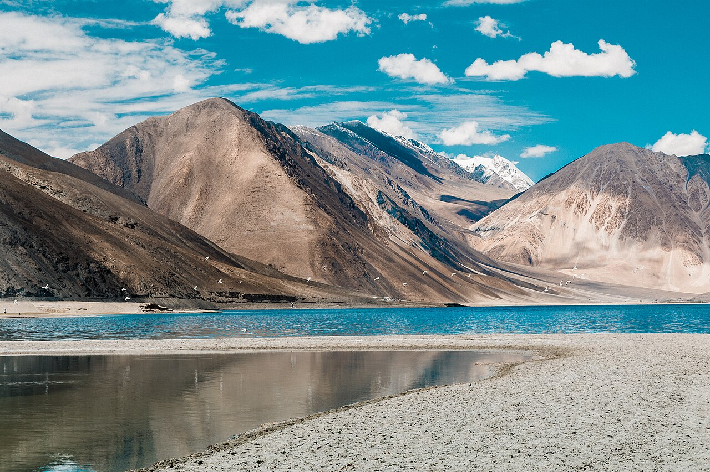

Geopolitics · The Frontier
The India–China Border Dispute: A Himalayan Faultline

Stretching some 3,488 kilometres across the highest mountains on earth, the boundary between India and China is the longest disputed frontier in the world — and one of the few that has never been formally settled. Two civilisational states, home together to more than a third of humanity, still cannot agree on where one ends and the other begins.
This is the same cold, thin-aired country my poems return to — only seen from above, as a question of maps and power rather than the individual soldier holding a ridgeline in the dark.
A border that was never drawn
When India became independent in 1947 and the People's Republic of China was founded in 1949, neither inherited a fully demarcated Himalayan boundary. The British had left behind competing alignments. In the east, the McMahon Line — agreed at the 1914 Simla Convention — placed the frontier along the Himalayan crest; China never accepted it. In the west, the vast, empty plateau of Aksai Chin was claimed by India but, crucially, traversed by a road China built in the 1950s linking Xinjiang and Tibet.[1]
The result was two perceptions of one line. Where India saw intrusion, China saw its own territory — and vice versa.
1962: the war that froze the question
In October 1962, China launched a swift, large-scale offensive across both the eastern and western sectors. The Indian Army, under-equipped and fighting at altitudes it had not prepared for, was overwhelmed in weeks. China declared a unilateral ceasefire and withdrew in the east, but kept Aksai Chin. The 1962 war left a wound in the Indian psyche and a frontier defined not by treaty but by where the armies happened to stop.[2]
A line no surveyor drew, held by men no map remembers.
The Line of Actual Control

What separates the two armies today is not a recognised border but the Line of Actual Control (LAC) — a notional line of military positions that both sides interpret differently. Because patrols disagree on where it runs, soldiers from both armies sometimes patrol the same ground, leading to face-offs. Decades of agreements (1993, 1996, 2005) tried to keep the peace by banning firearms near the line — which is precisely why clashes here are fought with fists and stones.
Why it flared again
After decades of relative calm, the frontier turned violent once more. The 2017 standoff at Doklam, near the India–China–Bhutan trijunction, saw a tense 73-day confrontation over a Chinese road. Three years later came the deadly clash in the Galwan Valley — the first combat deaths on the border in over four decades. Both episodes shared a root cause: infrastructure. As both nations build roads, airstrips and villages closer to the line, the friction multiplies.[3]
The stakes beyond the mountains
The dispute is no longer only about icy plateaus. It shapes India's defence budget, its alignment with partners like the United States and the Quad, and its caution toward Chinese investment. For Beijing, the western highlands secure the route to Tibet; for Delhi, the eastern sector is sovereign Indian territory in Arunachal Pradesh, which China provocatively calls "South Tibet."
Diplomats have held more than twenty rounds of talks. Disengagement at specific points has been achieved, but the larger boundary remains unsettled — frozen, like the land it crosses.
The long watch
For all the maps and ministerial meetings, the frontier ultimately rests on soldiers standing in places where the human body is not meant to live. That is the thread connecting the cold strategy of the boundary question to the warm courage of the men who hold it — the same thread that runs through everything I write. The line may be disputed. The duty is not.
Sources & further reading
- "Sino-Indian border dispute," Wikipedia.
- "Sino-Indian War," Wikipedia.
- "Line of Actual Control," Wikipedia.
All images via Wikimedia Commons, used under the licences shown on each file page.